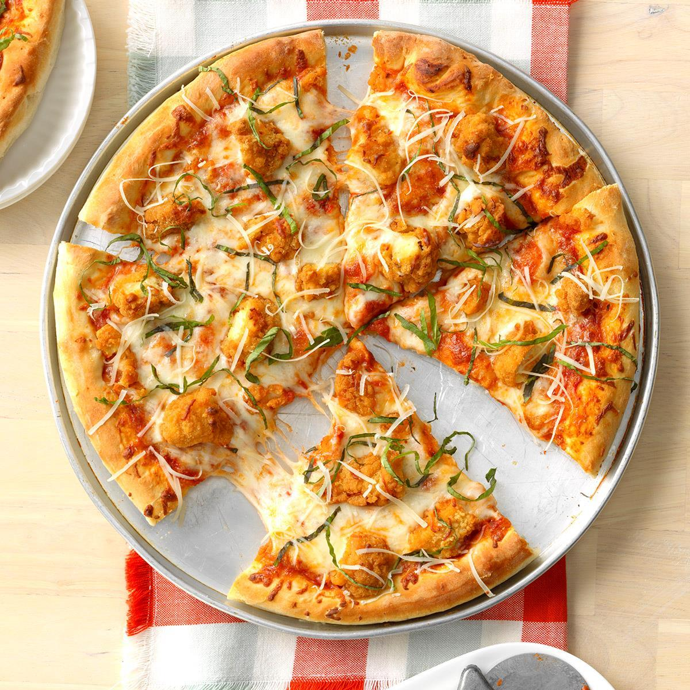

This pizza comes together in a flash and looks like one you'd get from a fancy pizza joint.
The key is to use a brand of nuggets you are familiar with and enjoy.
Don't skip the fresh basil--that extra layer of flavor makes the whole pizza pop.
Ingredients
- 12 frozen chicken nuggets
- 1 12-inch pre-baked pizza crust
- 1/2 cup marinara sauce
- 2 button mushrooms, sliced
- 1/2 cup shredded mozzarella cheese
- 1/4 cup shredded Parmesan cheese
- 6 basil leaves, cut into thin ribbons
Steps to follow
- Preheat the oven to 425 degrees F (220 degrees C). Arrange nuggets in a single layer on a pizza pan.
- Bake nuggets in the pre-heated oven for 10 minutes or according to package directions; transfer to a cutting board and cut each nugget in half.
- Increase the oven temperature to 450 degrees F (230 degrees C).
- Place pizza crust on the pizza pan; spread on marinara in an even layer. Arrange halved nuggets and sliced mushrooms evenly over marinara; sprinkle with mozzarella cheese.
- Bake pizza in the preheated oven until heated through, about 5 minutes. Sprinkle with Parmesan cheese and scatter basil over cheese; bake for 3 minutes more.
Return to top
Return to main page